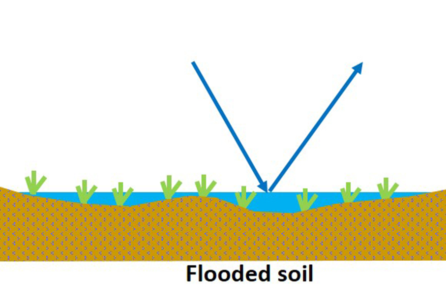

¿De dónde se sacan los datos?
Imágenes de satélite
Las imágenes de satélite ofrecen vistas detalladas de grandes áreas de la Tierra, permitiendo observar cambios en tiempo real, como incendios, inundaciones o la deforestación. Su desventaja es la temporalidad fija y a veces poco frecuente para el monitoreo de la emergencia.
Se utilizan para monitorear el avance de desastres naturales y a evaluar daños. Satélites como los de NASA (Landsat) y ESA (Sentinel) son ampliamente utilizados en emergencias.
Drones y fotografías aéreas
Los drones pueden capturar imágenes detalladas de zonas específicas, incluyendo aquellas de difícil acceso o con daños severos.
Estas imágenes facilitan la inspección de áreas afectadas por desastres como terremotos o huracanes, permitiendo obtener mapas de alta precisión y en tiempo real de las zonas críticas.
Sensores en tierra
Los sensores en tierra miden parámetros como temperatura, humedad, precipitación, calidad del aire, caudales de ríos, etc.
Son vitales para pronosticar eventos climáticos extremos, como tormentas o sequías, y permiten crear mapas de pronóstico de riesgos, especialmente para huracanes e inundaciones.
Datos demográficos
Los censos y otras bases de datos poblacionales ofrecen información sobre la cantidad y distribución de la población, así como datos sociodemográficos.
Estos datos son esenciales para evaluar la vulnerabilidad de las comunidades y planificar evacuaciones. Permiten identificar qué áreas tienen mayor concentración de población.
La misión Sentinel-1 es una constelación formada por dos satélites de órbita polar (hasta diciembre de 2021), que operaban día y noche realizando imágenes de radar de apertura sintética (SAR) en la banda C. Actualmente sólo existe uno que proporciona datos con polarización dual y cuenta con tiempos de revisita muy cortos.
El Radar de Apertura Sintética (SAR) tiene la ventaja de no estar limitado por la cobertura de nubes o la falta de iluminación y puede adquirir datos sobre un sitio durante el día o la noche en todas las condiciones meteorológicas. Dentro del plan de observación, la constelación Sentinel-1, garantiza observaciones para los siguientes servicios: vigilancia marítima, vigilancia terrestre y gestión de emergencias.
Entre los servicios de emergencias, el SAR es la opción más empleada para eventos de inundación, ya que además de poder atravesar las nubes, tiene una especial sensibilidad a captar el agua por su reflexión especular que la diferencia del resto del terreno que tiene una reflexión difusa.
La presencia de agua también puede ser visible en zonas con vegetación debido al aumento de la retrodispersión, causado por los efectos de doble rebote entre una superficie lisa de agua y los troncos perpendiculares de los árboles.
 |
También se puede estimar el grado de saturación de agua de un suelo a partir de los datos del radar. En comparación con un suelo seco, la retrodispersión aumenta con el incremento de la humedad del suelo. Sin embargo, si el suelo está completamente inundado, la retrodispersión se debilita debido a una proporción cada vez mayor de reflexión especular.
 |
 |
 |